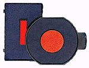
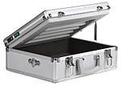
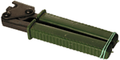

Срочное изготовление печатей и штампов в Москве м. Таганская. Восстановление печатей по оттиску. Изготовление гербовых печатей.
ICQ-консультант
Наши опытные менеджеры помогут Вам с выбором услуг по изготовлению печатей и штампов, выбрать оборудование для изготовления печатей и штампов, дадут нужные рекомендации при выборе оснасток для печатей. Обращайтесь!
Мы предлагаем широкий выбор ручной и автоматической оснастки для печатей и штампов производства Trodat, Colop, Shiny. Полный спектр штемпельной продукции: датеры, нумераторы, самонаборные печати.
Аксессуары для печатей

Предлагаем широкий ассортимент аксессуаров для печатей и штампов производства Trodat, Colop, Shiny: штемпельные подушки, чернила для штемпельных подушек.
Оборудование и расходные материалы для изготовления печатей
Оборудование для изготовления печатей

Для производителей печатей и штампов мы предлагаем оборудование для изготовления печатей с широким модельным рядом экспонирующих камер для изготовления печатей и штампов, другие виды оборудования для изготовления печатей: flash-системы, автоматические мойки, и программы для изготовления печатей.
Так же предлагаем весь необходимый спектр расходных материалов для изготовления печатей и штампов: жидкие и твердые фотополимеры (Дихром Люкс, Ideal, Verbatim, Colop), разделительная пленка, демпфер, ультрафиолетовые лампы, затемнитель негативов, активатор, уф-лампы.
Пломбир для опечатывания на пластилине или сургуче предназначен для опечатывания различных помещений, сейфов, складов и т.д. Когда опечатанный объект вскрывается, нарушается целостность оттиска пломбира, сделанного на пластилине. Пломбиры изготавливаются из латуни или дюралюминия.
Пломбираторы

Пломбиратор предназначен для опломбирования контейнеров, ящиков, помещений, различных измерительных приборов (электросчетчиков, водосчетчиков и т.д.) свинцовыми или пластиковыми пломбами. При опломбировании пломбиратором вместе с пломбами применяется пломбировочная проволока.